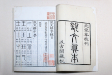
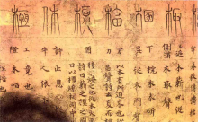
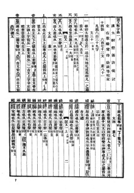

《说文解字》是首部按部首编排的汉语字典。原书作于汉和帝永元十二年（100年）到安帝建光元年（121年）。宋太宗雍熙三年，宋太宗命徐铉、句中正、葛湍、王惟恭等同校《说文解字》，分成上下共三十卷，奉敕雕版流布，后代研究《说文》多以此版为蓝本，如：清代的段玉裁注释本即用此版《说文》为底稿而加以注释。
《说文解字》原文以小篆书写，逐字解释字体来源．全书共分540个部首．收字9353个．另有“重文”（即异体字）1163个．共10516字。《说文解字》是科学文字学和文献语言学的奠基之作，在中国语言学史上有极其重要的地位。
说文解字内容简介
编辑

说文解字
《说文解字》内容共十五卷，以小篆为研究对象，同时参照小篆以外的古文、籀文，其中一至十四卷为文字解说，十五卷为叙目，每卷都分上下两篇，实为三十卷。共收字头9353个，重文（古文、异体等）1163个，字头以小篆为准，兼有古文、籀文等异体。
[1]

唐抄本说文解字
《说文解字》首创汉字部首，全文共分部首540个，从“一”部开始到“亥”部结束，同部字的第一个字就是部首，并用“凡某之属皆从某”标明。正文部分重点在字形的分析，“说文”以“文”（独体为主）；“解字”重点在字义的解释，以“字”（合体为主），小篆是全书的说解对象，通过字形的分析，来肯定字的性质和类型，说明文字义形音三种要素和三者的密切关系，说解次序就是对每个字先说解其意义，次说形体，后说读音，全书以“六书”为书例，统全书文字。
《说文解字》里的“古文”，今依大徐本所注明的重文字数是474个，主要指汉代所发现的孔子壁中书及《春秋左氏传》。就许书所列古文形体来看，与魏石经古文、宋郭忠恕《汗简》所辑传抄古文字形皆近。这种文字也称为“蝌蚪文”，是战国时代通行于齐、鲁、三晋之间的一种古文字书迹。
《说文解字》里的“籀文”是来自《史籀篇》中的文字，大徐本标明的重文数共计208个。今比照出土东周文字资料，不论秦或东方诸国均有许书籀文之用例，许多籀文字形还接近西周晚期的金文字形，表明《史籀篇》所流传的时代要早于东周，班固、许慎以为周宣王时书，大致是可信的。
在许书重文里，还有“或体”、“俗体”、“今文”诸名，许慎常用“或作某”、“俗作某”称之。古文、籀文与正篆是属于不同时期所存在的古汉字异文关系，或体、俗体、今文与正篆则主要是指汉世所存在的异文关系。
[2]
[3]
说文解字成书过程
编辑说文解字书名来源
关于作品名称的来源，许慎对此的解释是：仓颉开始造文字时，大概是按照万物的形状临摹，所以这种图画似的符号叫做“文”，这以后，那形与形，形与声结合的符号便叫“字”。“文”，就是描绘事物本来的形状，“字”的含义是说滋生，繁衍。
[4]
《说文解字》之名包括两层意思：一是“说文”，一是“解字”，“文”与“字”不是同一概念。《说文解字序》说：“仓颉之初作书，盖依类象形，故谓之文。其后形声相盖，即谓之字。文者，物象之本；字者，言孳乳而浸多也。”
“字”是后起的，秦代以前，文字只称“文”或“书”，不叫“字”，“文”和“字"反映了汉字发展的两个阶段，即图画符号阶段和概念符号阶段，古文字学家称独体的字为“文”，称合体的字为“字”，独体的“文”因为不能再分解，故说明之，即“说文”之义；合体的“字”由两三个不同的“文”构成，故剖解之，即“解字”之义，上述两层意思合在一起，可作《说文解字》之名的含义。
[2]
说文解字创作背景
许慎所处的时代，古文经与今文经的论争非常激烈。今文经的儒生大多认为当时通行的用隶书书写的经典，都是父子相传，不可怀疑，不可更改的。他们解说字义不严肃，谬语较多。而古文经的儒生则认为从孔壁中发掘出来的用六国文字书写的经典是可靠的。这场斗争对经学和文字学的兴旺发展是有益的。处于这个时代的许慎，“性淳笃”，且“博学经籍”，并注意研究周秦时的西土文字籀书及“孔壁古文”（又称东土文字），尤其着力于小篆和六书，诸如《仓颉》《博学》《凡将》《急救》《训纂》等字书。由此，他给后来撰写《说文解字》奠定了坚实的基础。
许慎认为，有文字而后有五经，今文经学随意解说文字，是“人用己私，是非无正，巧说邪辞，使天下学者疑。”要纠正今文经的妄说，提高古文经的信度，“理群类，解谬误，晓学者，达神旨”，必须弄懂文字的结构、读音及其意义。他强调，“文字者，经艺之本，王政之始，前人所以垂后，后人所以识古。”并说“本立而道生”。（以上引文见《说文解字后叙》）在长期的学习和研究中，许慎搜集到大量的小篆、古文、籀文资料，并且以广博的经学知识为基础，根据六书条例，在从贾逵受古学之时，即着手编写《说文解字》，在汉和帝永元十二年（100年）正月草成这部巨著。
许慎在校书过程中，涉猎的典籍广而精深。当时《说文解字》的初稿虽已完成，但为了利用此机会将它补充得更加完善，迟迟不作定稿。安帝元年初六，即公元119年，全国四十二处地震，灾情极为严重。皇帝下诏三府，选属下有能力的官员，出补令长，安抚百姓，稳定民心。许慎朴实忠厚，又“能惠利牧养”，故被选受诏到沛国洨县（今安徽固镇）任县令。许慎致力儒学，淡于仕官，在就任县令之前，即称病回故乡万岁里，专心审定《说文解字》。三年后，即公元121年，《说文解字》定稿，遂让其子许冲将稿奉献皇帝。
[5-6]
说文解字版本演变

陈昌治刻本说文解字
如今能看到最早的《说文》版本，是唐人写本。一为《木部》残本，一为《口部》残简。前者是清同治二年莫友芝得于安徽黟县县令张仁法，后辗转归日本人内藤湖南，藏于京都府恭仁山庄，又经内藤之手转与日本武田氏家族之杏雨之屋，《木部》6叶（页）共94行，每行2篆，存188篆。后者有二，为日人平子尚氏所藏，存4字，未公诸世，一为日人某氏所藏，存6行，12篆。
南唐徐锴重订《说文》作《说文解字系传》四十卷，又据唐孙愐的《唐韵》，作《说文解字篆韵谱》五卷，用唐李舟的《切韵》次第。因为李阳冰好以私意说文字，不守许慎原说，徐锴作《祛妄篇》（《说文解字系传》里的一篇）专祛李氏之妄，驳李氏臆说五十多条。
宋太宗雍熙三年，徐铉（字鼎臣）又承诏和句中正、葛湍、王惟恭等同校《说文》，详参众本，正误补阙；又因篇数过繁，分成上下共三十卷，奉敕雕版流布。因此，今本《说文》在唐、宋时经过两次窜改，已非许书原貌，南宋孝宗时，李焘有《说文解字五音韵谱》三十卷，起东终甲，而偏旁各以形相从。
二徐本是明清以来最流行的版本，因徐铉为兄，其本被后人称为“大徐本"；徐锴为弟，其本称为“小徐本。一般认为小徐本最好的本子是清道光十九年（1839年）由祁隽藻根据宋朝抄本刻写的本子，大徐本有宋椠本，据说宋椠本有大字本和小字本的分别，但传世的多是小字本，晚明时，常熟毛晋及其子褒，依据宋刻本始终亥小字本，以大字雕板印行。《说文》原本次第始为人知，后来几经删改，成为当时通行的汲古阁本。
清嘉庆十四年（公元1809年）孙星衍据宋本重刻大徐本《说文解字》，是为平津馆本。同治十二年（公元1873年）陈昌治又根据孙本加以校订，改为一篆一行本，这便是中华书局1963年所据以整理出版的底本。
[7-8]
说文解字理论精神
编辑说文解字建立部首
汉字是凭借形体来表示意义的，因此，对汉字义符加以分析，把所有汉字都按所属义符加以归类，这是汉字学家的工作，这项工作由许慎最先完成了《说文解字》一共分540部，除了个别部首还可以合并与调整外，从总体上说都是合理的，都符合造字意图。许慎在安排540部的次序上煞费苦心，把形体相近或相似的排在一起，这等于把540部又分成若干大类，这可以帮助读者更深刻地理解义符，更正确地理解字义。每部所属的字的排列也不是杂乱无章的，而是依据以类相从的原则。具体说来有3种情况：其一词义相近的字排在一起；其二，词义属于积极的排在前边，属于消极的排在后边；其三，专有名词排在前边，普通名词排在后边。许慎创造的540个部首和一部之中各个字的排列方法，都是从文字学角度出发的，这种排列方法更能体现部首与部首，字与字之间的意义联系，这与后世,从检字法角度的分部和按笔画多少分类迥然不同。
说文解字训释本义
许慎之前的经学家为经典作注，都是随文而释，所注释的字（词）义，基本上是这个字在一定语言环境中的具体意义和灵活意义。许慎在《说文解字》中紧紧抓住字的本义，并且只讲本义（由于历史的局限，个别字的本义讲得不对），这无疑等于抓住了词义的核心问题，因为一切引申义、比喻义等都是以本义为出发点的，掌握了本义，就能够以简驭繁，可以推知引申意义，解决一系列有关词义的问题。此外，许慎在训释本义时，常常增加描写和叙述的语言，使读者加深对本义的理解，扩大读者的知识面，丰富本义的内涵和外延。
说文解字分析音形义
许慎在每个字下，首先训释词义，然后对字形构造进行分析，如果是形声字，在分析字形时就指示了读音，如果是非形声字，则常常用读若、读与某同等方式指示读音。汉字是属于表义系统文字，是由最初的图画文字演变而来的，这样通过字形分析来确定，证实字义完全符合汉民族语言文字的一般规律。而语音是语言的物质外壳，文字不过是记录语言的符号，许慎深知“音义相依"、“义傅于音”的原则，所以在《说文解字》中非常重视音义关系，常常以声音线索来说明字义的由来，这为后世训诂学者提供了因声求义的原则。
说文解字以六书分析汉字
在许慎之前，有仓颉依据六书造字的传说。现代文字学家认为，六书是对汉字造字规律的总结，而不是汉字产生之前的造字模式。在许慎之前，仅有六书的名称：象形、指事、会意，形声，转注，假借，没有具体阐述，更没有用来大量地分析汉字。许慎发展了六书理论，明确地为六书下定义，并把六书用于实践，逐一分析《说文解字》所收录的9353个汉字，这在汉字发展史和研究史上有着承前启后继往开来的重要意义，从而确立了汉字研究的民族风格民族特色。
[9-10]
说文解字作品目录
编辑第一卷
上篇：一部、丄部、示部、三部、王部、玉部、珏部、气部、士部、丨部。
下篇：屮部、艸部、蓐部、茻（mǎng）部。
第二卷
上篇：小部、八部、釆部、半部、牛部、犛（máo）部、告部、口部、凵（kǎn）部、吅（xuān）部、哭部、走部、止部、癶（bō）部、步部、此部。
下篇：正部、是部、辵（chuò）部、彳部、廴（yǐn）部、㢟（chǎn）部、行部、齿部、牙部、足部、疋部、品部、龠（yuè）部、册部。
第三卷
上篇：㗊（jí）部、舌部、干部、𧮫（jué）部、只部、㕯（nè）部、句部，丩部、古部、十部、卅部、言部、誩（jìng）部、音部、䇂（qiān）部、丵（zhuó）部、菐（pú）部、廾部、𠬜部、共部、异部、舁部、𦥑部、䢅部、爨部。
下篇：革部、鬲部、䰜部、爪部、丮部、斗部、又部、部、史部、支部、𦘒部、聿部、画部、隶部、臤部、臣部、殳部、杀部、𠘧部、寸部、皮部、㼱部、攴部、教部、卜部、用部、爻部、㸚部。
第四卷
上篇：𡕥部、目部、䀠部、眉部、盾部、自部、白（zì）部、鼻部、皕部、习部、羽部、隹部、奞部、雈部、𠁥部、𥄕部、羊部、羴部、瞿部、雔部、雥部、鸟部、乌部。
下篇：𠦒部、冓部、幺部、𢆶部、叀部、玄部、予部、放部、𠬪部、𣦼部、歺部、死部、冎部、骨部、肉部、筋部、刀部、刃部、㓞部、丯部、耒部、角部。
第五卷
上篇：竹部、箕部、丌部、左部、工部、㠭部、巫部、甘部、曰部、乃部、丂部、可部、兮部、号部、亏部、旨部、喜部、壴部、鼓部、岂部、豆部、豊部、丰部、䖒部、虍部、虎部、虤部、皿部、𠙴部、去部、血部、丶部、
下篇：丹部、青部、井部、皀部、鬯部、食部、亼部、会部、仓部、入部、缶部、矢部、高部、冂部、𩫖部、京部、亯部、㫗部、畗部、啬部、来部、麦部、攵部、舛部、舜部、韦部、弟部、夂部、久部、桀部。
第六卷
上篇：木部、东部、林部、才部。
下篇：叒部、之部、帀部、出部、𣎵（bèi）部、生部、乇部、𠂹部、𠌶部、华部、𥝌部、稽部、巢部、桼部、束部、㯻部、囗部、员部、贝部、邑部、𨛜部。
第七卷
上篇：日部、旦部、倝部、㫃部、冥部、晶部、月部、有部、明部、囧部、夕部、多部、毌部、𢎘部、𣐺部、𠧪部、齐部、朿部、片部、鼎部、克部、彔部、禾部、秝部、黍部、香部、米部、毇部、臼部、凶部。
下篇：𣎳（pìn）部、𣏟部、麻部、尗部、耑部、韭部、瓜部、瓠部、宀部、宫部、吕部、穴部、㝱部、疒部、冖部、𠔼部、冃部、㒳部、网部、襾部、巾部、巿部、帛部、白部、㡀部、黹部。
第八卷
上篇：人部、七部、匕部、从部、比部、北部、丘部、㐺部、𡈼（tǐng）部、重部、卧部、身部、㐆部、衣部、裘部、老部、毛部、毳部、尸部。
下篇：尺部、尾部、履部、舟部、方部、儿部、兄部、旡部、皃部、𠑹部、先部、秃部、见部、覞部、欠部、㱃部、㳄部、兂部。
第九卷
上篇：页部、𦣻部、面部、丏部、首部、𥄉部、须部、彡部、彣部、文部、髟部、后部、司部、卮部、卩部、印部、色部、卯（qīng）部、辟部、勹部、包部、茍部、鬼部、甶部、厶部、嵬部。
下篇：山部、屾部、屵部、广部、厂部、危部、石部、长部、勿部、冄部、而部、豕部、㣇部、彑部、豚部、豸部、𤉡部、易部、象部。
第十卷
上篇：马部、𢊁部、鹿部、麤部、㲋部、兔部、萈部、犬部、㹜部、鼠部、能部、熊部、火部、炎部、黑部。
下篇：囱部、焱部、炙部、赤部、大部、亦部、夨部、夭部、交部、尣部、壶部、壹部、幸部、奢部、亢部、夲部、夰部、亣部、夫部、立部、竝部、囟部、思部、心部、惢部。
第十一卷
上篇：水部。
下篇：沝部、濒部、巜部、川部、泉部、灥部、永部、𠂢部、谷部、仌部、雨部、云部、鱼部、𩺰部、燕部、龙部、飞部、非部、卂部。
第十二卷
上篇：乚部、不部、至部、西部、卤部、盐部、户部、门部、耳部、𦣝部、手部、𠦬部。
下篇：女部、毋部、民部、丿部、𠂆部、乁部、氏部、氐部、戈部、戉部、我部、亅部、琴部、𠃊部、亡部、匸部、匚部、曲部、甾部、瓦部、弓部、弜部、弦部、系部。
第十三卷
上篇：糸部、素部、丝部、率部、虫（huǐ）部。
下篇：䖵部、虫（chóng）部、风部、它部、龟部、黾部、卵部、二部、土部、垚部、堇部、里部、田部、畕部、黄部、男部、力部、劦部。
第十四卷
上篇：金部、开部、勺部、几部、且部、斤部、斗部、矛部、车部、𠂤部。
下篇：𨸏（阜）部、𨺅部、厽部、四部、宁部、叕部、亚部、五部、六部、七部、九部、禸部、嘼部、甲部、乙部、丙部、丁部、戊部、己部、巴部、庚部、辛部、辡部、壬部、癸部、子部、了部、孨部、𠫓部、丑部、寅部、卯部、辰部、巳部、午部、未部、申部、酉部、酋部、戌部、亥部。
第十五卷
《说文解字叙》
[11]
说文解字组织体例
编辑说文解字说解体例
《说文解字》对每个字的说解，包括字义、字形和字音三个部分。《说文解字》对每一个字头，首先解释其意义。许慎根据自己所掌握的资料，说明该字最初造字时所代表的意义。这些解释反映出上古时期人们对自然和人类社会的认识，以及中国古代的历史和文化。
《说文解字》说解字义的方式，主要有直训、描写、譬况和声训等。
一、直训。即直接说解某字的意义。
祠，春祭曰祠，品物少，多文词也。从示，司声。仲春之月祠不用牺牲，用圭璧及皮币。
琥，发兵瑞玉，为虎文。《春秋传》曰：“赐子家双琥。”
二、描写。即对被说解的对象的特征进行描述。
虫，一名蝮，博三寸，首大如擘指。
籁，三孔龠也。大者谓之笙，其中谓之籁，小者谓之翁。
龙，鳞虫之长，能幽能明，能细能巨，能短能长，春分而登天，秋分而潜渊。
三、譬况。即用常见的事物来比方被解释的对象。
熊，兽似豕，山居，冬蛰。
虽，似蜥蜴而大。
四、声训。声训是用与被释词古音相近、意义相关的词来进行解释。声训大多解释该事物得名的原由，具有追寻语源的作用。
日，实也。太阳之精，不亏。
月，阈也。太阴之精。
说文解字析形体例
在说解中，作者首先区别了“文”与“字”。文，是事物形象的本来面目。即“文”是独体的，故只能“说”。《说文解字》以六书理论为框架来分析汉字结构，进而揭示其本意。但严格说，许慎只用了前四书。在释形时没有明确指出“此假借”、“此转注”，假借、转注应属用字法。
一、象形
象形字，常用“象形”、“象某形”、“象某某之形”等说明。比如：
- 象形：“气，云气也。象形。”
- 象某形：“自，鼻也，象鼻形”
- 象某某之形：牙，牡齿也。象上下相错之形。
- 从某某，象某某：果，木实也。从木，象果形在木之上
二、指事
指事字，常用“指事”、“象某某之形”、“从某，从某”说明。比如：
- 指事：“丄，高也。此古文上，指事也。”
- 象某某之形：刃，刀也。象刀有刃之形。
- 从某，从某：“寸，十分也。从又，从一。”
- 象某某：“凶，恶也。象地穿交陷其中也。”
刃不是象形字，刀上的一点只是标志刀口利的符号，它并不与刀构成一幅随体画物的圆象；寸不是会意字，一是标志寸口所在部位的符号，不能阅立存在，不是构成会意字的部件。
三、会意
会意字，常常用“从某，从某”、“从某某“、“从某，从某省”、“从某，从 ，某亦声”、“从某某，某亦声”、“从”带主谓句等来说明。比如：
- 从某，从某：“伏，司也。从人，从犬。”；“望，月满与日相望以朝君也。从月从臣，从𡈼，𡈼，朝廷也。”
- 从某某：位，列。中庭之左右为之位。从人、立。
- 从某从某会意：“信，诚也。从人从言，会意。”
- 从某从某省：“孝，善事父母者，从老省，从子，子承老也。”
- 从某从某，某（亦）声：“泰，滑也，从廾，从水，大声。”；“像，象也。从人，从象，象亦声”。
- 从某，从+主谓句：伐，击也。从人持戈。
“从某从某”、“从某某"表示会合几个形体的意义，成为这个新造字的意义。“从某省"，是说取某字的意义，但不取它的全形，只保留形体的一部分。“某亦声”，是说既取其形以会意，又取其音以象声，即会意兼形声。“从”带主谓句，是由一个主谓句揭示由几个部件构成的画面的中心意思。
四、形声
形声字常用“从X，X声”、“从X省，X声”，“从，x省声”等等来说明。“从X，X声”是说半取形，半取声。“从X省"，是说取某字为形旁，但不取它的全形，只取形体的一部分。“X省声”是说取某字为声旁，但不取它的全形，只取形体的一部分。
转注是特殊的形声字，它的构形与一般形声字相同。假借没有产生新的形体，所以没有专用的析形述语。
例如:
- 从某，某（省）声：“放，逐也。从攴，方声”；“兹，艸”（草）木多益。从艸，丝省声。”
- 从某从某，某亦声：“化，教行也。从七从人，七亦声。”
- 从某某，某（亦）声：“僦，赁也。从人、就，就亦声。”
说文解字注音体例
许慎所处的时代尚无反切，系统地用反切对汉字标音始于汉末时孙炎的《尔雅音义》，如今《说文解字》大徐本的反切是据唐代孙愐《唐韵》的反切加上去的。《说文解字系传》（小徐本）的反切是南唐朱翱所加的。在《说文解字》里，许慎对汉字的读音问题作了两种处理，第一是用形声系统，即形声字解形之某声、省声、亦声，来说明造字的读音；第二，是用“读若”拟出汉代人的读音。
1.形声法
形声法是《说文解字》注明字音的最重要的方式。许慎所处的时代没有反切，有人因此认为《说文解字》是没有读音的字书，除了少数“读若”注音之外，收字读音不可知。许慎利用汉字的谐声系统来给《说文解字》中的字注音。谐声偏旁代表上古造字之时的语音。在《说文解字》所收录的字头中，形声字约占82.7%。其它的无声旁字没有标音成分，但大多数充当形声字声旁，自然也是标音符号。在许慎指出某字为形声，其谐声偏旁为什么以后，《说文解字》中约有7700个字可以探求其上古音。
2.读若法
“读若”就是用同音字或音近字直接注明读音，《说文解字》仅给生僻字或读音特殊的字用此法注音，约有800多个，约占《说文解字》字头数的1/10。词例是：读若，读如，读若某同，读与某同。如：
莠：禾粟下生莠也，从艹，秀声，读若酉。
森：木多貌。从林，从木，读若曾参之参。
读若某，可能是完全同音，也可能只是读音相近。同音的，如：
朿：木芒也，象形，读若刺。
肰，大肉也，从肉犬，读若然。
音近的如：
燮：和也。从言从又炎，读若湿。
皿：饭食之用器也，象形，与豆同意，读若猛。
除了直接拟音外,《说文解字》还往往以俗语、方言、经典成语注音。
哽：语为舌所介也，从口，更声，读若并没使。
卸：舍车解马也。从卩、止、午，读若汝南人写书之写。
《说文解字》中的“读若”，标注读音的同时，又往往指出文字通假的线索，也可庭见古书用字的同音代替现象。《说文解字·心部》：“愆，过也。”愆的本义是罪过，同䇂，古典籍通用愆。《说文解字·雥部》：“集，群乌在木上。”集的本义是集合，同亼，古典籍通用“集"。《说文解字·乙部》：“乱，治也。”乱的本义是治理，同阅，古典籍通用“乱"。上述三例“读若"，通过音义相同的注释，说明了古今字形的变化。
[12]
[6]
说文解字征引体例
一、引用古籀
小篆上通古籀，下启汉隶，所以许氏以小篆为正体，以古籀为征引附录的对象。这是许书的通例。比如：
“旅"下：古文旅。古文以为鲁卫之鲁。
“旁”下：雱，籀文
“蒜”下：左文五十三，重二。大篆从茻。
“奭”下：《史篇》名丑。
“爰”下：籀文以为车辕字。
古文是春秋战国时期东方六国的文字，《说文解字》注明了的有510个。“古文某“是说古文的另一种写法；“古文某如此"，是只知其形，而不知其构形的理据；“古文以为”，是说明古文借此字为彼字，是文字的早期假借现象。输文是春秋战国时期的西土文字，《说文解字》注明了的有223字。或称“籀文”，或称“大篆”，或称“史篇"。史篇，徐锴说：“谓所作仓颉十五篇也。”
也有先叙古籀，附以小篆的。这是《说文解字》的变例。是为了建立某一部首的需要。如二（上）部、吕部。
二、引用或俗
或俗就是或体和俗体。古籀、或、俗几乎全是重文。所谓重文，就是一个字的不同形体。古文、籀文与小篆是不同时期的不同形体，或体和俗体与小篆是同一时期的不同形体。下面是《说文解字》注明了“或”、“俗”的例子：
“壻”下：婿，壻或从女。
“褎”下：袖，俗褎从由。
这里附带说明，《说文解字》在“儿“下说儿是古文奇字人，在“无”下说“无”是奇字无。所谓奇字，实际上也是一种异体字。
三、引用经书
在《说文解字》中多引用经书、除了引儒家的《诗》、《书》、《礼》、《易》、《春秋》、《论语》、《孝经》等著作外，还引用了诸子、《尔雅》、《左传》等先秦著作，共有四十多种。
《说文解字》引用经书，有的用以释义，有的用以解形，有的注音。比如：
祝，祭主赞词者。从示，从人口。一曰：从兑省。《易》曰：“兑为口为巫。”
香，芳也。《春秋左传》曰：“黍稷馨香。”
上例引《易经》明“祝“字的另一构形说。下例引《春秋传》证明“芳”义。上文读若法一节引用的《诗经》“瓜瓞菶菶“句是为“唪”字标音。
四、引用通人
通人，就是学精通的专家学者。《说文解字》全书有110余条说解，分别采自39家通人的说法。
五、引用方言俗语
全书共170余条。比如：
睇，目小视也。南楚谓眄日睇。
皇，大也。从自。自，始也。始皇者，三皇大君也。自读若鼻，今俗以始生子为鼻子。六、引别说，广异闯。《说文解字》常用“一曰"、“或曰”引用正解之外的另一种说法。比如：
昏，日冥也。从日，氐省。氐者，下也。一曰民声。
舒，伸也。一曰舒缓也。
玖，石之次玉黑色者。读若芑。或曰：若人句脊之句。
说文解字作品思想
编辑一、系统文字学观念的确立
许慎把早期独立成形的书写符号称作“文”，“文”与“文”组合起来的符号称作“字”。许慎在文字学史上首先提出了独体为文，合体为字的思想，中国的文字从此也有了正名，有了历时的观念和结构层次的界说。在许慎看来，汉字体系的成熟，就是由早期文字的大量孳乳来实现的。 在《说文解字叙》中，许慎勾勒了一个汉字形体流变的总体脉络，即由古文、籀文（大篆）再到小篆、隶书。
二、汉字六书理论的确立
“六书”是中国古代研究汉字造字方式的一种理论，六书的条例名称最早见于战国时代。《周礼》有云：保氏掌谏王恶，而养国子以道。乃教之六艺：一曰五礼，二曰六乐，三曰五射，四曰五御，五曰六书，六曰九数。 “六艺”是周代教育贵族子弟的主要科目，其中的六书，即是有关汉字的学习内容。秦朝是通过法律手段初步统一了汉字的形体，却顾不上进一步规范音义。及至东汉，班固、郑众和许慎先后把《周礼》中的六书解释为六种造字方法。
班固《汉书·艺文志》 | 1．象形 | 2．象事 | 3．象意 | 4．象声 | 5．转注 | 6．假借 |
|---|---|---|---|---|---|---|
郑众《周礼解诂》 | 1．象形 | 4．处事 | 2．会意 | 6．谐声 | 3．转注 | 5．假借 |
许慎《说文解字·叙》 | 2．指事 | 1．象形 | 4．形声 | 3．会意 | 5．转注 | 6．假借 |
班、郑两家虽列有六书细目，却没有具体的解释。唯许慎独有理论性阐发，既给六书规定了界说，并各举了字例，发凡了文字学之要义。
三、汉字学部首观念的确立
在六书理论的基础上再建立起汉字的部首概念，并把数以万计的汉字通过字形关系分别统属在540部首之下，使之各有所归，统一编排，这可以说是许慎研究汉字的一个重大创举，是许慎文字学思想的又一鲜明体现。许慎那个时候，反切注音的方法尚未产生，按字音系统编次汉字一时还做不到。许慎把握住了汉字“义著于形”的特点，很好地解决了汉字字形的编排问题。他发现成千上万的汉字，本是由一些基本形体孳乳出来的，这些基本形体数量有限，却具有强大的造字能力。如以“邑”为形符的字多充当地名或表示与地域有关的族氏名，以“手”为形符的字多用来表记人的行为动作等。举例如下：
示部举例： 示【示】，天垂象，见吉凶，所以示人也。凡示之属皆从示。 祥【祥】，福也。从示，羊声。 福【福】，佑也。从示，畐声。 艸部字举例： 艹【艸，今作草】，百芔也。从二屮。凡艸之属皆从艸。 苏【蘇】，桂荏也。从艸，稣声。 籣【兰】，香艸也。从艸，阑声。 许慎540个部首的建立，一方面是较好地解决了统摄所有汉字的问题，而另一个重要方面，则是创造发明了一种部首检索方法，开启了汉语字典的先河。
[14-15]
说文解字学术研究
编辑《说文解字》问世以后，很快就引起当时学者的重视，在注释经典时常常引证《说文解字》。 如：郑玄注三礼，应劭、晋灼注《汉书》，都曾援引《说文解字》以证字义。到了南北朝时代，学者们对《说文解字》已经有了比较完整、系统的认识。唐代科举考试规定要考《说文解字》。自唐代以后，一切字书、韵书及注释书中的字义训诂都依据《说文解字》。
东汉到唐代是《说文》学的起始期。其代表人物是李阳冰。唐代以前，《说文解字》只有传写本没有刊印本。李阳冰把自己收藏的和自己收集到的《说文解字》抄本加以整理和研究，刊定为30卷，修正笔法；虽然有不少主观臆说，但也时有正确的意见。
徐锴著有《说文解字系传》，共40卷，是最早也是最完整的《说文解字》注本。它除有一般注本的共同写法外，其显著特征是特别注意从声音上考索字义，从形声字的声旁说明字义。这种因声求义的方法对清代训诂学家有很大的影响。周祖谟在《问学集·徐锴说文学》一文说：“徐锴《系传》是清代文字训诂之学的前驱。”
宋太宗雍熙初年（公元984年），徐铉与句中正、葛湍、王维恭受诏同校《说文解字》，雍熙三年（公元986年）十一月完稿，太宗命国子监雕为印版，称为大徐本。它整理审定原著，将原著的15篇各分为上下，成为30卷；依据唐代孙愐《唐韵》逐字反切注音；在许慎的说解内加上“臣铉曰”、“臣铉等曰”的按语，以参校异同。
清代是《说文解字》研究的鼎盛时期。清代研究《说文解字》的学者不下200人。清代《说文解字》之学，可分为四类：其一，是校勘和考证工作，如严可均的《说文校议》 、钱坫的《说文解字斠诠》等；其二，对《说文解字》进行匡正，如孔广居的《说文疑疑》 、俞樾的《儿笘录》等；其三，对《说文解字》的全面研究，如段玉裁的《说文解字注》、桂馥的《说文解字义证》、朱骏声的《说文通训定声》、 王筠的《说文句读》 ；其四，订补前人或同时代学者关于 《说文解字》研究的著作，如严章福的《说文校议议》、王绍兰的《说文段注订补》等。其中第三种最为重要，这四人也并称“说文四大家”。近人丁福保持以往各家研究《说文解字》的专著和其他论及《说文解字》的著述以及甲骨文、金文的材料汇集为《说文解字诂林》 ，后又搜集遗逸编为《补遗》，是该书注释的总汇。
[16]
说文解字后世影响
编辑《说文解字》是中国第一部字书，也是世界上较早出现的辞书。《说文解字》对后人的影响，第一，《说文解字》从上万个汉字中区别其偏旁和部首，分类归纳成五百四十个部类，开启了汉字按部首编排的汉字字典编排方法。直至当今使用的汉语字典、词典，仍然使用部首检字法编排。
第二，《说文解字》在说解内容中首次阐发了“六书”的内容，贯穿了六书的原则，许慎对六书分别下了定义，举了例字，后世讲六书都沿用许慎的名称和定义。
第三，《说文解字》收录了汉字形体的多种写法，当时汉朝的篆体外，还有籀文、古文等异体写法。这些字体大都为象形体。这就为研究汉字提供了宝贵的古文字资料，也为推究上古文字的本意给予极大的方便。后世发现的甲骨文、金文、陶文、简帛文字这些汉朝以前的文字，都是依据《说文解字》所收录的这些古文字字形作依据，才得以考证和认读。所以《说文解字》是语言文字学的宝库，在文字、训诂和音韵等方面都显示出极大的价值。直至现代，《说文解字》学仍然是一门重要的学问。
[17]
说文解字历史评价
编辑1、首次阐发六书内容，并在说解中贯穿了六书原则，为汉字建立了理论体系。
2、首次从汉字系统中归纳出540部首，并创立了按部首排列的汉字字典编纂法。
《说文解字》 改变了周、秦到汉字书的编纂方法，将所收字编成四言、七言韵语的形式，开创了部首编排法，共分为五百四十部。许氏总结了先前的“六书”理论，创造了系统解释文字之法，是先解释字义，再剖析形体构造，最后注明读音。剖析字形的方法，是以前字书中没有出现过的。《说文解字》对古文字、古文献和古史的研究做出了重要贡献。
《说文解字》总结了先秦、两汉文学的成果，给我们保存了汉字的形、音、义，是研究甲骨文、金文和古音、训诂不可缺少的桥梁。特别是《说文》对字义的解释一般保存了最古的含义，对理解古书上的词义更有帮助。保存了研究古代社会历史、文化等各方面的材料，是我们整理我国优秀的文化遗产的重要的阶梯。《说文》包括各种含义的字的解释，反映了古代的政治、经济、文化、风俗习惯等等。如《说文》“车，舆轮之总名，夏后时奚仲所造”。根据《说文》的说解，可以肯定在夏代已有“车”这种交通工具。又如“姓”字从“女”和诸如“姜”、“姬”、“姚”等一系列从“女”旁的姓，可以窥测到古代母系社会的痕迹。也反映了古代的一些历史情况和各种知识。
[16]
此前古未有之书，许君之所独创。——清·段玉裁
（许慎）后又作《说文解字》十四篇，皆传于世。——范晔《后汉书》
慎博问通人，考之于逵（贾逵），作《说文解字》，六艺群身之诂皆训其意，而天地、鬼神、山川、草木、鸟兽、昆虫、杂物、奇怪、王制、礼仪、世间人事，莫不毕载。——许冲《〈说文解字〉表》
[18-19]
说文解字作者简介
编辑 许慎塑像
许慎塑像
许慎（约58年—约147年），字叔重，东汉汝南召陵（今河南召陵区）人，由郡功曹举孝廉，再迁，除洨长，入为太尉南阁祭酒。尝从贾逵受古学，博通经籍，时人为之语曰“五经无双许叔重”。所著除《说文解字》外，还有《五经异义》《淮南鸿烈解诂》等书，今皆散佚。
[20]
清人有辑本。
许慎字叔重，汝南召陵人也。性淳笃，少博学经籍，马融常推敬之。时人为之语曰：“五经无双许叔重。”为郡功曹，举孝廉，再迁，除洨长。卒于家。
词条图册
更多图册
- 参考资料
-
- 1. 许慎《说文解字序》：“此十四篇，五百四十部，九千三百五十三文，重一千一百六十三，解说凡十三万三千四百四十一字。”
- 2. 徐潜（主编）．中国古代文字：吉林文史出版社，2014年：133-134
- 3. 汤可敬．说文解字今释：岳麓书社，1997年：1-6（序）
- 4. 许慎《说文解字序》：“仓颉之初作书也，盖依类象形，故谓之文。其后形声相益，即谓之字。文者，物象之本；字者，言孳乳而寖多也。“
- 5. 汤可敬．说文解字今释：岳麓书社，1997：1-2（前言）
- 6. 刘叶秋．中国字典史略：中华书局，2004：16-32
- 7. 安树芬，彭诗琅（主编）．中华教育通史 第3卷：京华出版社，2010：475-478
- 8. 蔡英杰主编．中国古代语言学文献教程：光明日报出版社，2011：4-11
- 9. 汤可敬．说文解字今释：岳麓书社，1997年：12-20
- 10. 董希谦，张启焕主编．许慎与《说文解字》研究．开封：河南大学出版社，1988：82-107
- 11. [东汉]许慎．说文解字：中华书局，1963
- 12. 姚孝遂．许慎与《说文解字》：中华书局，1983：10-16
- 13. 余国庆．说文学导论：安徽教育出版社，1995：44-89
- 14. 吴平，钱荣贵主编．中国编辑思想发展史 上：武汉大学出版社，2014：211-222
- 15. 《说文解字》学术思想及价值 ．许慎文化园官网[引用日期2017-04-29]
- 16. 汤可敬．说文解字今释：岳麓书社，1997年：3-11
- 17. 任乃荣．中华文字语音溯源：新华出版社，2013：151-152
- 18. 《说文解字》简介 ．许慎文化园[引用日期2012-08-04]
- 19. 汤可敬．说文解字今释：岳麓书社，1997：21-24
- 20. 许慎简介 ．许慎文化园．2012-09-16[引用日期2012-09-16]
- 21. 范晔．后汉书：中华书局，2012-12-01
- 收起